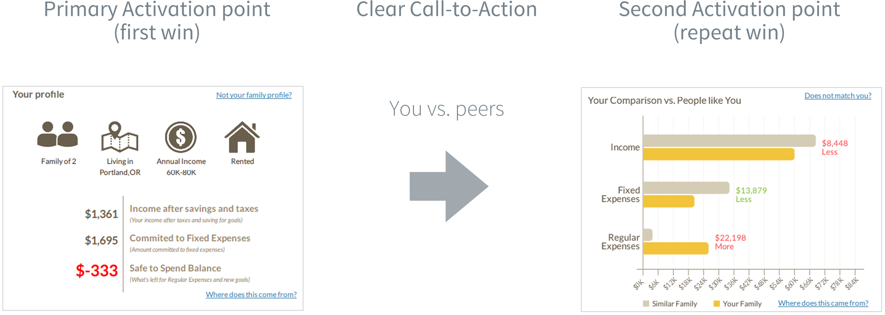

Lifedreams - is a personal finance management platform, which helps its users get a better understanding of their family budget and simplify financial planning.
Lifedreams is a self-service web application designed for retail customers. Users find The team has observed that many users would get confused about the functionality of the product, which would in turn translate into lower conversions into active customers, poor engagement and more involvement from customer support.
We begin with identify success points or activation points for a new user and aligning them with the overall messaging and positioning of the product. At Lifedreams we've identified the primary and secondary (subsequent) activation points, which help the user engage with the product and deliver value.
The primary activation point is when new users see a monthly budget, which platform generates from the data they provided. With the primary activation point it is important to take a newly signed up user to it very quickly to demonstrate that the product matches expectations and encourage further engagement with the product.
The task here is to create a flow to lead a new sign up to this first activation point beginning with sign up.
Customer surveys showed that most users don't mind sharing some personal information, in fact it reinforces the expectation of better results. The challenge here is to structure the data collection process so as not to overburden the user and keep her on track. To achieve this the sign up form was given several improvements:
1) The content is structured into two sections with visual highlights
Breaking this information down creates a visual organization, making it easy for the user to digest and respond.
2) Drop-downs provide answer choices to minimize manual input
Not having to type anything speeds up the process versus asking a user to manually type the response. Suggestions in the drop-downs also minimize mental choices thus eliminating the need to ponder, looking for an appropriate response, this is also known as cognitive overhead.
3) Each input field has an accompanying tooltip with additional information to help the user make the right choice
Finally, we provide contextual tips with more relevant information for each item to further aid the user with making the right choice. This information is specific to each field and is presented when that field selected, so it’s presented at exactly the right time. It’s a great way to work with limited real estate on the screen and provide the right information at the right time.
Notice how that the call-to-action button is phrased I’M DONE LET’S GO, this is done on purpose to communicate that the sign up process is done and the user will not need to provide any more information.
Next we take the user into the the Dashboard. This is where that primary activation point needs to happen.
The way the Dashboard was executed before (image below) this fails to happen as the overwhelming amount of information that the user suddenly encounters steals the spotlight from the key value element.
The main problem with this design is that too many pieces of information are competing for user attention, so in the end users get lost. This in turn breaks the onboarding process, as there is no clear indication of where to go next from here or what to do with this data.
The solution we found is to eliminate the clutter and focus user attention on the key value element to complete the activation. What happens at this stage is the product manages to deliver on its promises, which are being reinforced as we collect user information during sign up and a first user win as the product demos its functionality.
The second important point is to provide a clear actionable next step, so that the user knows what to do next.
At Lifedreams this was an opportunity to lead the user to a secondary activation point - demonstrating how the user is doing versus other households in the area with the similar earning and spending patterns - something the product was capable of doing and where that user information provided at sign up came in handy.
Having this structure reinforces user engagement as we successfully convey valuable product features in stages allowing the user to have little success points and encourage learning of the product through use.
From here on, the user will follow on to edit or adjust her figures to see how the budget will change as the system provides helpful tips along the way. Having laid out this initial experience, the team can now use the same principles to introduce new features to the user by maintaining engagement.
In a nutshell what we did is structured the user flow in a direct succession to help user achieve success with the product from stage to stage, while encouraging engagement and driving her forward.